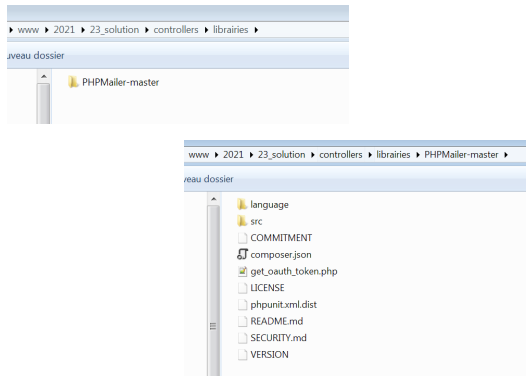
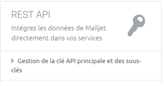
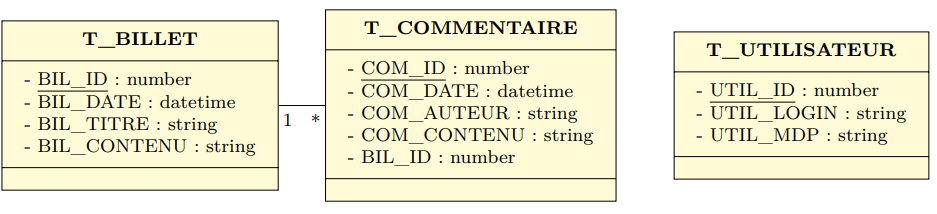

Langage PHP :
PHP est un langage de programmation par scripts principalement utilisé pour produire des pages Web dynamiques.
Indroduction au PHP :
PHP, à l'origine "Personal Home Page" mais depuis renommé en "PHP : Hypertext Preprocessor" est un langage de scripts. Il est multi-usage, mais une de ses utilités principales est la possibilité d'intégrer des scripts PHP au sein de templates HTML afin de produire facilement des pages Web de façon dynamique.
Contrairement à JavaScript, où les pages Web sont modifiées de façon dynamique du côté du client (c'est-à-dire du navigateur Internet de l'utilisateur), PHP permet de générer des pages Web du côté du serveur. Le script PHP sera exécuté au niveau du serveur lors d'une requête HTTP, et c'est la page créée à l'issue de cette exécution qui est envoyée au client en réponse à sa requête.
Template HTML et PHP :
Un fichier PHP est un fichier texte, qui peut contenir de l'hypertexte de façon similaire à un fichier HTML.
Cependant, en outre, il peut contenir du code PHP, placé au sein de balises <?php (ouvrante) et ?> (fermante). Lorsque le serveur charge la page, le code situé entre ces balises est exécuté, et ses valeurs de retours (s'il y en a) sont insérées dans la page à l'endroit où la balise PHP était placée.
Prenons par exemple le template suivant :
<!DOCTYPE html>
<html lang="fr">
<head>
<meta charset="UTF-8">
<title>test</title>
</head>
<body>
<?php echo "Bonjour le monde ! <br>"; ?>
</body>
</html>Une fois que le serveur charge cette page, le code PHP est exécuté. L'instruction echo indique que le texte qui suit est inséré dans la page, et il s'agit de la seule instruction ici. Par conséquent, une fois le chargement terminé, le fichier HTML suivant est généré :
<!DOCTYPE html>
<html lang="fr">
<head>
<meta charset="UTF-8">
<title>test</title>
</head>
<body>
Bonjour le monde ! <br>
</body>
</html>Notez qu'il est aussi possible d'écrire un fichier PHP qui ne contient que du code PHP, sans HTML autour. Dans ces cas-là, il faut quand même ouvrir la balise <?php, mais on peut omettre la balise fermante ?>.
Éléments de syntaxe PHP :
La syntaxe de PHP est inspirée de langages tels que C, C++ et Java; vous pourrez sans doute la prendre en main sans trop de difficulté. Nous verrons ici les particularités du langage les plus utiles, mais nous vous encourageons comme toujours de consulter la documentation du langage pour plus d'informations : https://www.php.net/docs.php.
Notons pour commencer qu'à l'instar de Java, toute instruction en PHP se termine par un point-virgule.
Variables :
PHP est un langage non typé, à l'instar de JavaScript. Cela signifie que le type des variables n'est pas déclaré lorsqu'une variable est créé. En outre, PHP offre certaines fonctionnalités par rapport aux variables qui permettront de rendre la génération des pages dynamiques particulièrement pratique.
PHP offre trois niveaux de visibilité pour ses variables :
- Les variables locales sont visibles uniquement dans le bloc de code où elles sont déclarées. Le nom d'une variable locale commence par le symbole $, par exemple $var.
- Les variables globales sont visibles partout dans le code. Celles-ci peuvent être définies de deux façons : soit avec le mot-clé global, par exemple global $var, soit en l'ajoutant au tableau $GLOBALS via $GLOBALS['var'].
-
Les variables superglobales sont des variables visibles partout dans le code, déjà prédéfinies par PHP, avec des rôles bien définis. Il s'agit également de tableaux, qui pourront recevoir des champs nommés. On notera en particulier :
- La variable $_GET, qui contient les données passées au serveur durant une requête HTTP GET.
- La variable $_POST, qui contient les données passées au serveur durant une requête HTTP POST.
- La variable $_FILES, qui contient les fichiers passés par une requête HTTP POST.
- Les cookies $_COOKIE qui permet d'accéder aux cookies HTTP.
- La variable de requête $_REQUEST, qui combine par défaut $_GET, $_POST et $_COOKIE.
- La variable de session $_SESSION qui persistent durant une session utilisateur donnée.
- La variable d'environnement $_ENV contient les informations de l'environnement dans lequel le programme s'exécute.
Notons aussi que $GLOBALS est en fait une variable superglobale qui reprend les variables globales définies dans le programme.
Les variables superglobales, en particuliers, sont celles qui vont nous permettre de créer des pages. Par exemple, lors de l'envoi d'un formulaire HTML :
<form action="login.php" method="POST">
<input type="text" name="login" placeholder="Login">
<input type="submit" value="Se connecter">
</form>L'action de la balise <form> dicte l'URL qui est demandée au serveur. Dans ce cas-ci, il s'agit d'un fichier PHP; le serveur va alors exécuter le script contenu dans ce fichier :
<!DOCTYPE html>
<html lang="fr">
<head>
<meta charset="UTF-8">
<title>Login</title>
</head>
<body>
<?php
$login = $_POST['login'];
echo "Bienvenue $login";
?>
</body>
</html>La variable superglobale $_POST récupère automatiquement les informations passées par le formulaire.
Contrôle des variables :
Il est possible d'effectuer des vérifications sur les variables :
- Vérification de l'existence : via la fonction isset().
-
Vérification de la vacuité (si la variable est vide) : via la fonction empty().
- Une variable peut exister mais être vide : par exemple un champ laissé vide dans un formulaire !
- Destruction manuelle de variable : via la méthode unset().
Opérateur $ et variables dynamiques :
En dehors de la déclaration d'une variable, $ est un opérateur qui permet de retourner la valeur contenue dans la variable dont le nom est renseigné juste après le symbole $. Par exemple, dans login.php ci-dessus, dans l'expression "Bienvenue $login"; l'opérateur $login est évalué en premier, et la valeur contenue dans cette variable est concaténée à la chaîne adjacente.
Un usage particulier de cette capacité en PHP est l'emploi de variables dynamiques : si on souhaite à accéder à une variable dont le nom est lui-même contenu dans une autre variable, on pourra se servir de cet opérateur pour procéder rapidement :
<?php
// appel d'une variable dynamique
// affectation
$cours = "AIN";
$varx = "cours";
// appel de la variable dynamique
echo $$varx; # équivaut à echo $cours;
?>Constantes :
La définition d'une constante se fait via la fonction define(name, value). Par exemple :
<?php
define("WEB", "http://www.heb.be/esi");
echo "Site internet : " . WEB . "<br>";
// ou encore
echo "Site internet : " . constant('WEB') . "<br>";
?>Notez que l'accès la valeur de la constante se fait en notant son nom, sans le précéder par l'opérateur $.
PHP possède en outre quelques constantes prédéfinies :
- __FILE__ : nom du fichier actuellement exécuté.
- __LINE__ : n° de la ligne actuellement exécutée.
- PHP_VERSION : chaîne de caractères donnant la version de PHP utilisée.
- PHP_OS : nom du système d'exploitation.
Pour rappel, le langage PHP est case sensitive. Pour déboguer, la fonction var_dump affiche les informations détaillées d'une variable.
Opérateurs :
Les opérateurs de PHP sont, pour la plupart, similaires à ceux que vous aurez rencontrés dans d'autreslangages comme Java. On notera par exemple :
- Les opérateurs arithmétiques (+, -, *, /, %).
- Les opérateurs d'incrémentation et de décrémentation (++ et --).
- L'opérateur d'assignation ($a = 42;).
- Les opérateurs de comparaison (==, !=, >, >=, <, <=).
- Les opérateurs logiques (ET : && ou and, OU : || ou or). Notez que la version texte de ces opérateurs a une priorité moindre.
- L'opérateur de concaténation de chaînes, attention, est différent de Java : il s'écrit avec .. Par exemple : $a . $b concatène les chaînes de caractères contenues dans les variables $a et $b.
- L'accès à un caractère dans une chaîne de caractères se fait via les crochets, par exemple $str[0] renvoie le premier caractère de la chaîne contenue dans $str.
L'instruction echo, déjà mentionnée, place ce qui suit (typiquement une chaîne de caractères) dans la page HTML générée à la fin de l'exécution du script. La fonction print() existe aussi, et effectue la même opération, mais renvoie également une valeur de retour (1 en cas de réussite), et peut donc être appelée au sein d'une expression.
Tableaux :
Les tableaux en PHP combinent deux types de tableaux :
- Les tableaux scalaires, où les éléments sont associés à des indices (nombres entiers).
- Les tableaux associatifs, où les éléments sont associés à des clés (typiquement des chaînes de caractères).
Ces deux types être combinés au sein d'un même tableau. On notera en particulier que les variables superglobales sont toutes des tableaux.
<?php
// tableau scalaire à une dimension (vecteur)
$heb = array("esi", "isti", "defré");
// tableau scalaire à deux dimensions (matrice)
$mat[0][1] = 16;
// tableau associatif à une dimension (vecteur)
$tab["quatrieme"] = "ghi";
// tableau associatif à plusieurs dimensions
$user["admin"]["nom"] = "Simpson";
$user["admin"]["prenom"] = "Bart";
$mat[1]["nom"] = "Manfroid"; // combinaison d'indices associatif et numérique
?>Structures de contrôle et répétitives :
De même, les structures de contrôle et les boucles sont similaires à celles de Java :
-
La condition if :
<?php $a = 34; $b = 136; if ($a == $b) { echo "<p>\$a ($a) est égal à \$b ($b)"; $c = 23; } elseif ($a < $b) { echo "<p>\$a ($a) est plus petit que \$b ($b)"; } else { echo "<p>\$a ($a) est plus grand que \$b ($b)"; } ?> -
L'alternative à choix multiples switch :
<?php $i = 2; switch ($i) { case 0: print '$i = 0'; break; case 1: print '$i = 1'; break; case 2: print '$i = 2'; break; default: print '$i est très étrange'; } ?> -
La boucle "pour" for :
<?php for ($i = 0; $i != 10; $i++) { print $i; } ?> -
La boucle "pour chaque" foreach :
<?php $arr = array(1, 2, 3, 4); foreach ($arr as &$value) { $value *= 2; } ?> -
La boucle "tant que" while :
<?php $i = 0; while ($i != 10) { print $i . "<br>"; $i++; } ?> -
La boucle "pour" faire - tant que :
<?php $i = 0; do { print $i . "<br>"; } while ($i != 0); ?>
Certaines instructions permettent d'influencer le déroulement de conditions ou de boucles :
- L'instruction break; permet de sortir d'une condition ou d'une boucle.
- L'instruction continue; permet de continuer.
Inclusion d'un fichier :
Les instructions PHP include et require vont nous permettre toutes deux d'inclurde des fichiers de code (ou plus exactement le contenu de ces fichiers) à l'intérieur d'autres fichiers de code.
Ces deux instructions sont très puissantes et vont s'avérer extrêmement utiles lors de la création d'un site web.
En effet, imaginons que vous vouliez créer un site personnel ou un site comme celui-ci. Sur votre site, il y a de fortes chances que l'en-tête, le menu et le pied de page soient identiques pour toutes les pages.
Jusqu'à présent, en HTML, nous étions obligé de réécrire le même code correspondant à l'en-tête, au menu et au pied de page sur chacune des pages de notre site.
Cela, en plus de ne pas être optimisé d'un point de vue performance, nous fait perdre beaucoup de temps et va poser de sérieux problèmes le jour où l'on souhaite modifier le texte dans notre pied de page par exemple pour tout notre site.
Plutôt que de réécrire tout le code relatif à ces différentes parties sur chacune de nospages, pourquoi ne pas plutôt enregistrer le code de notre menu dans un fichier séparé que l'on appellera par exemple menu.php, et faire de même pour le code relatif à notre en-tête et à notre pied de page puis ensuite inclure directement ces fichiers sur chacune de nos pages ?
Nous allons pouvoir faire cela grâce aux instructions include et require.
Ainsi, nous n'avons plus qu'à écrire le code relatid à notre menu une bonne fois pour toutes et à l'inclure dans chaque page par exemple. Cela représente une considérable simplification pour la mainteance de notre code puisque nous n'avons qu'à modifier le code de notre menu dans le fichier menu.php plutôt que de le modifier dans toutes les pages si nous avions copié-collé le code du menu dans chaque page.
Notez déjà que pour inclure un fichier dans un autre fichier, il faudra préciser son emplacement par rapport au fichier qui contient l'instruction include ou require de la même façon qu'on pourrait le faire pour faire un lien en HTML ou pour inclure une image en HTML.
La seule et unique différence entre les instructions include et require va se situer dans la réponse du PHP dans le cas où le fichier ne peut pas être inclus pour une quelconque raison (fichier introuvable, indisponible, etc.).
Dans ce cas-là, si l'inclusion a été tentée avec include, le PHP renverra un simple avertissement et le reste du script s'exécutera quand même tandis que si la même chose se produit avec require, une erreur fatale sera retournée par PHP et l'exécution du script s'arrêtera immédiatement.
L'instuction require est donc plus "stricte" que include.
La différence entre les instructions include et require et leurs variantes include_once et require_once est qu'on va pouvoir inclure plusieurs fois un même fichier fichier avec include et require tandis qu'en utilisant include_once et require_once cela ne sera pas possible : un même fichier ne pourra être inclus qu'une seule fois dans un autre fichier.
Par exemple :
<?php
$files = array('prem.php', 'deux.php', 'trois.php');
for ($i = 0; $i < count($files); $i++) {
include $files[$i];
}
?>Ce fichier va charger et exécuter le contenu des fichiers prem.php, deux.php et trois.php. Notez qu'en particulier, cela signifie que tous les echo effectués dans ces fichiers seront appliqués, et toutes les définitions de fonctions ou classes dans ces fichiers seront désormais accessibles.
Fonctions :
La définition et l'appel de fonctions utilise une syntaxe similaire à celle de JavaScript : le mot-clé function permet de définir une nouvelle fonction, et l'appel se fait via le nom de la fonction suivi de parenthèses (contenant éventuellement les arguments de la fonction).
<?php
// DÉFINITIONS DES Fonctions
function entete($titre) {
echo "<html lang='fr'>
<head>
<title>$titre</title>
</head>
<body>";
}
function pied_de_page() {
echo "<hr>
</body>
</html>";
}
// APPELS
entete("inroduction à PHP");
echo "<h1>Utilisation de fonctions</h1>";
pied_de_page();
?>L'instruction return permet de renvoyer une valeur de retour. Si on souhaite renvoyer plusieurs valeurs, on passera par un tableau. Par exemple :
<?php
function addition ($nb1,$nb2) {
$res = $nb1 + $nb2;
return $res;
}
functin add_mult ($nb1, $nb2) {
$res1 = $nb1 + $nb2;
$res2 = $nb1 * $nb2;
return array($res1, $res2);
}
$resultat = addition(8, 6);
echo "la somme vaut : " . $resultat;
$resultats = add_mult(8, 6);
echo "la somme vaut : " . $resultats[0] . "<br>";
echo "le produit vaut : " . $resultats[1] . "<br>";
?>Il est aussi possible de renseigner des valeurs par défaut aux paramètres de vos fonctions. Faites attention à placer les arguments possédant des valeurs par défaut à la fin de vos en-têtes de fonction !
<?php
// FONCTIONS avec valeurs par défaut pour les arguments
function entete($titre, $bgcolor = "red") {
echo "<html lang='fr'>
<head>
<title>$titre</title>
</head>
<body bgcolor='$bgcolor'>";
}
function pied_de_page($email = "info@he2b.be") {
echo "<hr>Courriel : $email
</body>
</html>";
}
// APPELS
entete("inroduction à PHP");
echo "<h1>Utilisation de fonctions</h1>";
pied_de_page();
?>Classes :
PHP est un langage orienté objet : il est donc possible d'y définir des classes.
Les attributs sont définis comme des variables locales au sein d'une classe, et les méthodes comme des fonctions au sein de la classe également.
<?php
class Dossier {
// Attributs
var $nom = null;
var $fichiers = array();
// Méthodes
function Dossier ($valeur) {
$this->nom = $valeur;
}
function ajouter_fichier ($nom_fichier) {
$this->fichiers[] = $nom_fichier;
}
}
?>Le constructeur de classe se note comme toute autre fonction, mais a pour nom le nom de la classe ou peut être utilisé par la fonction magique __construct(). Notez aussi l'utilisation du mot-clé $this pour faire référence à l'objet lui-même au sein de fonction, et de l'opérateur flèche -> pour accéder à un attribut ou appeler une méthode sur l'objet.
Pour créer un objet, on procèdera comme suit :
<?php
$dossier = new Dossier("maison");
$dossier->ajouter_fichier("cuisine");
?>Quelques fonctions utiles :
Manipulation de chaînes de caractères :
Documentation complète : https://www.php.net/manual/fr/book.strings.php.
- strlen(string) : fournit la longueur de la chaîne.
-
Gestion de la casse :
- strtolower(string) : met les caractères en minuscule.
- strtoupper(string) : met les caractères en majuscule.
- ucfirst(string) : met le premier caractère en majuscule.
-
Gestion des sous-chaînes :
- substr(string, start, length) : extrait une prtie d'une chaîne de caractères.
- substr_count(source, pattern) : compte le nombre d'occurences de la sous-chaîne pattern dans la chaîne source.
- strrchr(string, pattern) : extrait la fin de la chaîne string, à partir de la dernière occurence de la sous-chaîne pattern.
- str_replace(pattern, replacement, source) : remplace toutes les occurences de "pattern" trouvées dans la "source" par la chaîne "replacement.
- trim(string) : retourne une string sans les espaces blancs ("\n", "\r", "\t", "\v", "\0", " ") en début et en fin de chaîne.
- ltrim(string) : retourne une string sans les espaces blancs de début de chaîne.
- rtrim(string) : retourne une string sans les espaces blancs de fin de chaîne.
- explode(separator, string) : scinde une chaîne sur base d'un séparateur et retourne un tableau contenant les éléments résultant de la division.
- implode(join, array) : retourne une chaîne formée par la concaténation des chaînes présentes dans array, spéarées par la sous-chaîne présente dans join.
- split(pattern, join) : scinde une chaîne aux occurences de la sous-chaîne patern et renvoie un tableau contenant les chaînes ainsi formées.
-
Suppression de texte indésirable :
- strip_tags(string [, allowable_tages]) : supprime les balises HTML et PHP dans une chaîne.
- stripslashes(string) : supprime les caractères \ dans une chaîne de caractères.
-
Encodage pour URL :
- urlencode(string) : convertit une chaîne selon les règles d'encodage d'URL.
- rawurlencode(string) : convertit une chaîne en URL selon la norme IETF [RFC1738] (espace en "%20" au lieu de "+", utile lors d'utilisation d'URL avec le protocole FTP par exemple).
- urldecode(string) : décode une chaîne selon les règles d'encodage d'URL.
- htmlspecialchars(string) : convertit les caractères spéciaux("&", """, "<", ">") en équivalent HTML ("&", """, "<", ">").
-
Encodage pour HTML :
- nl2br(string) : convertit à la ligne en retour de chariot HTML (<br>).
- htmlentities(string) : convertit les caractères significatifs en HTML.
Manipulation de tableaux :
Document complète : https://www.php.net/manual/fr/book.array.php.
- array_walk($var, fct) : applique la fonction fct à chaque élément du tableau $var.
- list(var1, var2, ...) : permet d'assigner une série de variables à partir d'un tableau : $info = list($drink, $color, $power);.
- each(array) : retourne chaque paire clé/valeur d'un tableau d'assignation.
- sizeof(array) : retourne le nombre d'éléments du tableau.
- is_array(var) : teste si une variable est de type tableau.
Manipulation de répertoires et de fichiers :
Documentation complète : https://www.php.net/manual/fr/refs.fileprocess.file.php.
-
Navigation :
- opendir(dir) : ouvre un répertoire et récupère un pointeur.
- readdir(dir_handle) : retourne le nom de fichier suivant dans le répertoire pointé par dir_handle (obtenu via opendir).
- rewinddir(dir_handle) : se remplace au début du répertoire dir_handle.
- closedir(dir_handle) : ferme le répertoire.
- is_dir(filename) : vérifie si la cible est un répertoire.
- chdir() : change le dossier courant de PHP.
-
Manipulation de fichier :
- copy("anc_fich", "nouv_fich") : copier un fichier.
- unlink(filename) : supprimer le fichier.
- filesize(filename) : retourner la taille d'un fichier en octets.
- file_exists(filename) : teste si un fichier existe.
- tempnam(dir, prefix) : crée un fichier et lui donne un nom unique.
- flock(file_hanfle, operation_type) : permet un verrou sur un fichier en cas d'accès concurrents.
-
Ouverture et modification de fichier :
- fopen(filename, mode) : ouvre un fichier et retourne un pointeur sur ce fichier.
- fclose(file_handle) : ferme le pointeur sur le fichier ouvert.
- fwrite(file_handle, string[, length]) : écrit dans un fichier.
- fread(file_handle, length) : lit un fichier.
- fgets(file_handle, length) : lit la ligne courante d'un fichier.
- file(filename) : renvoie le contenu d'un fichier sous forme d'un tableau.
- readfile(filename) : récupère le contenu d'un fichier et l'envoie sur la sortie standard.
- feof(file_handle) : teste si la fin du fichier a été atteinte.
- topfile() : crée un fichier temporaire et l'ouvre en mode écriture.
Expressions régulières :
Documentation complète : https://www.php.net/manual/fr/book.regex.php.
Les expressions régulières permettent de représenter une catégorie de chaînes de caractères qui correspondent toutes au même modèle, afin de faire des manipulations plus possées.
- ereg(pattern, string[, regs]) : cherche le modèle pattern dans la chaîne et place éventuellementle résultat de recherche dans le tableau regs.
- eregi(pattern, string[, regs]) : idem, mais insensible à la casse.
- ereg_replace(pattern, replacement, string) : cherche le modèle pattern dans la chaîne et les remplace par replacement.
- eregi_replace(pattern, replacement, string) : idem, mais insensible à la casse.
Pour avoir la présentation du cours de PHP en PowerPoint, vous les obtenir en cliquant sur les liens ci-dessous :
Les formulaires PHP (PowerPoint)
Upload de fichiers en PHP :
Introduction :
Toutes les fonctions WEB d'upload de fichiers sont potentiellement vulnérables. L'expérience nous montre que régulièrement ces fonctions ne sont pas corresctement sécurisées, particulièrement dans certains espaces d'administration ou les développeurs sont plus laxistes avec la sécurité.
Ces failles sont pourtant très dangereuses et systématiquement testées par les attaquants désireux de prendre le contrôle du site Internet cible.
Dans cet article, nous aborderons plusieurs exemples de vulnérabilités afin de comprendre comment un auditeur ou pirate pourra les contourner, puis nous terminerons par un exemple de code propre et sécurisé.
Les risques liés aux failles d'upload sont :
-
Upload d'une backdoor (porte dérobée).
-
Écrasement de fichiers.
L'upload de fichiers :
Voici un exemple de code HTML et PHP d'upload de fichiers sans restrictions pour que les néophytes comprennent le principe. Notez qu'il faudra les droits en écriture pour que l'on puisse importer des fichiers dans le dossier "images".
Pour télécharger des fichiers sur le serveur, il vous faut un formulaire munis d'un champ de type file. Vous devez rajouter l'attribut enctype ayant pour valeur : "multipart/form-data", ce qui veut dire que votre formulaire va pouvoir transférer des données de type binaire.
<!-- Le type d'encodage des données enctype doit être spécifié -->
<form enctype="multipart/form-data" action="URL à préciser" method="post">
<!-- MAX_FILE_SIZE doit précéder le champ input de type file -->
<input type="hidden" name="MAX_FILE_SIZE" value="1000000">
<label>Votre fichier :</label>
<!-- Le name est à bien définir, il détermine l'indice dans le tableau associatif $_FILES -->
<input type="file" name="mon_fichier"><br>
<input type="submit" value="Envoyer">
</form>Pour récupérer votre, fichier, vous avez à votre disposition le tableau superglobal $_FILES qui aura plusieurs entrées :
-
$_FILES['mon_fichier']['tmp_name'] : le nom temporaire du fihcier sur le serveur.
-
$_FILES['mon_fichier']['name'] : le nom original du fichier sur la machine cliente.
-
$_FILES['mon_fichier']['type'] : le type MIME du fichier.
-
$_FILES['mon_fichier']['size'] : la taille du fichier.
Avant de vouloir sauvegarder le fichier téléchargé il faut vérifier son envoi.
Gestion des erreurs d'envoi :
Les restrictions côté client sont les plus facile à contourner, on peut les trouver en HTML ou en JavaScript.
Vous pouvez gérer les erreurs de chargement avec $_FILES['mon_fichier']['error'] :
<?php
if ($_FILES['nom_fichier']['error']) {
switch ($_FILES['nom_fichier']['error']) {
case 1 : // UPLOAD_ERR_INI_SIZE
echo "Le fichier dépasse la limite autorisée par le serveur (fichier php.ini) !";
break;
case 2 : // UPLOAD_ERR_FORM_SIZE
echo "Le fichier dépasse la limite autorisée dans le formulaire HTML !";
break;
case 3 : // UPLOAD_ERR_PARTIAL
echo "L'envoi du fichier a été interrompu pendant le transfert !";
break;
case 4 : // UPLOAD_ERR_NO_FILE
echo "Le fichier que vous avez envoyé a une taille nulle !";
break;
}
} else {
// $_FILES['nom_fichier']['error'] vaut 0 soit UPLOAD_ERR_OK
// ce qui signifie qu'il n'y a eu aucune erreur
}
?>Explication :
-
La première erreur "UPLOAD_ERR_INI_SIZE" concerne la taille maximum autorisé par votre serveur, cette dépend donc de votre hébergement.
-
La deuxième erreur "UPLOAD_ERR_FORM_SIZE" concerne la valeur maximum autorisée par le forumaire, elle est définie par le champs de type hidden dont le nom doit impérativemnt avoir pour valeur MAX_FILE_SIZE. La taille est définie par l'attribut "value".
<input type="hidden" name="MAX_FILE_SIZE" value="1000000">Le champs caché doit être appelé avec le champs de type file.
Note : l'attribut value est exprimée en octets.
-
La troisième erreur "UPLOAD_ERR_PARTIAL" se produit si le transfert est interrompu et que le fichier est partiellement téléchargé.
-
La dernière erreur "UPLOAD_ERR_NO_FILE" concerne le transfert d'un fichier vide.
Pour contourner les protections côté client il y a plusieurs méthodes possible. Par exemple, nous pouvons enregistrer le formulaire sur notre machine, supprimer les protections, mettre l'adresse du site et le chemin de la page PHP dans les champs "action" de "form" créant ainsi notre formulaire sans les rections. Il nous restera plus qu'à l'utiliser.
On peut également vérifier par exemple l'extension du fichier ou encore même le mime-type avec getimagesize().
Par exemple, le code suivant prend en considération le type de contenu du fichier et n'autorise que le contenu de type image/png.
<?php
if (isset($_FILES['mon_fichier'])) {
$dir = './images/';
$file = $dir . basename($_FILES['mon_fichier']['name']);
if ($_FILES['mon_fichier']['type'] != 'image/png') {
print 'Erreur ! Seul les png sont autorisés.';
exit;
}
if (file_exists($file)) {
print 'Erreur ! Fichier existant.';
exit;
}
if (move_uploaded_file($_FILES['mon_fichier']['tmp_name'], $file)) {
print "Fichier uploadé : <a href='" . $file . "'>ici</a>";
} else {
print 'Erreur ! Fichier non uploadé.';
}
}
?>Donc, si l'on envoie un fichier PHP, nous verrons un message d'erreur. Alors que si l'on envoie un fichier PNG, il sera correctement uploadé. La faille dans cette protection est que le type de contenu est envoyé depuis le client. Par conséquent, si nous modifions le type de contenu de notre fichier PHP, celui-ci sera uploadé.
On peut aussi vérifier que l'extension du fichier uploadé soit parmi les extensions valides. Dans le code suivant, les extensions valides sont : .jpg, .gif et .png.
<?php
if (isset($_FILES['mon_fichier'])) {
$dir = './images/';
$file = $dir . basename($_FILES['mon_fichier']['name']);
$whitelist = array('.jpg', '.gif', '.png');
if (!in_array($_FILES['mon_fichier']['name'], $whitelist, true)) {
print 'Erreur ! seul les images sont aurorisées.';
exit;
}
if (file_exists($file)) {
print 'Erreur ! Fichier existant.';
exit;
}
if (move_uploaded_file($_FILES['mon_fichier']['tmp_name'], $file)) {
print "Fichier uploadé : <a href='" . $file . "'>ici</a>";
} else {
print 'Erreur ! Fichier non uploadé.';
}
}
?>Cette fois-ci, la faille ne vient pas que de notre script, celui se contente de vérifier les extensions et, si elles correspondent avec celles de la white list, le fichier est autorisé.
Il arrive que la configuration d'Apache avec l'utilisation d'un code comme celui ci-dessus provoque une faille de sécurité. Quand Apache est configuré pour exécuter un script il y a deux façons de le configurer : en utilisant AddHandler ou AddType. Dans les deux cas, si la configuration suivante (mime.conf) est utilisée, l'image sera interprésentée.
AddHandler application/x-httpd-php .gif
Ou
AddType application/w-httpd-php .gifCe congenre de configuration d'Apache est utilisé plus fréquemment que l'on pourrait le penser, on peut les trouver par exemple dans la cas de figure où un code PHP génère dynamiquement un grpahique. Il ne reste qu'à modifier l'extension de notre fichier test.php en test.gif et le tour est joué.
Dans la même catégorie, si le serveur Apache utilise la configuration ci-dessous nous sommes en présence d'une autre faille.
AddHandlerapplication/x-httpd-php.phpLe problème est que tous les fichiers ayant dans leurs noms ".php" seront interprétés par PHP, aussi bien test.php que test.php.gif.
Cette fois, en renommant notre test.php en test.php.gif, notre fichier passera le script de restriction des extensions et sera interprété avec succès.
La fonction getimagesize() détermine la taille de l'image fournie et en retourner les dimensions, elle peut également retourner plus d'informations comme le type de fichier.
Utilisons un script qui vérifie le type de l'image avec cette fonction et n'autorise que les JPG.
<?php
if (isset($_FILES['mon_fichier'])) {
$dir = './images/';
$file = $dir . basename($_FILES['mon_fichier']['name']);
$imageinfo = getimagesize($_FILES['mon_fichier']['tmp_name']);
if ($imageinfo['mime'] != 'image/jpeg') {
print 'Erreur ! seul les JPG sont autorisés.';
exit;
}
if (file_exists($file)) {
print 'Erreur ! Fichier existant.';
exit;
}
if (move_uploaded_file($_FILES['mon_fichier']['tmp_name'], $file)) {
print "Fichier uploadé : <a href='" . $file . "'>ici</a>";
} else {
print 'Erreur ! Fichier non uploadé.';
}
}
?>Il ne suffira pas de changer le content-type comme on l'a vu précédemment, car cette fonction travaille directement sur le fichier uploadé dans le dossier temporaire.
Il va falloir ruser un peu et lui fournir une vraie image pour qu'il passe le filte, cette image aura l'extension .php pour que Apache demande à PHP de l'interpréter qu'il y a it du code PHP dedans.
Une autre façon de sécuriser l'envoi de fichiers est de mettre un .htaccess dans le répertoire d'upload qui interdit les extensions de fihciers black listées et n'autorise que les extensionde fichiers images white listées.
Pour notre démonstration, nous utiliserons le .htaccess ci-dessous dans le répertoire images.
Options -Indexes
Options -ExecCGI
AddHandlercgi-script .php .php3 .php4 .phtml .pl .py .jsp .asp .htm
.shtml .sh .cgi
<Files ^(*.jpeg|*.jpg|*.png|*.gif)>
orderdeny,allow
deny from all
</Files>Ainsi que ce script d'upload.
<?php
if (isset($_FILES["image"])) {
$dir = './images/';
$file = $dir . basename($_FILES['mon_fichier']['name']);
if (move_uploaded_file($_FILES['mon_fichier']['tmp_name'], $file)) {
print "Fichier upload : <a href='" . $file . "'>ici";
} else {
print "Erreur! Fichier non upload";
}
}
?>Nous remarquons qu'il n'y a plus la vérification qui permet de déterminer si un fichier du même nom que celui à uploader existe déjà. La faille réside dans ce manque de vérification. Il devient alors possible d'envoyer un fichier .htaccess qui va écraser celui déjà présent.
Donc, en créant un .htaccess vierge et l'uploadant celui-ci écrasera l'ancien, supprimant les restrictions. Il est maintenant possible d'exécuter du PHP dans le répertoire images.
Dans le cas où le transfert n'échoue pas, vous pouvez envisager de sauvegarder le fichier.
Sauvegarder le fichier :
Lors de l'envoi d'un fichier, son nom est mémoriser temporairement dans "$_FILES['mon_fichier']['tmp_name']" et sera automatiquement détruit à la fin de l'exécution du script.
La fonction move_uploaded_file() est utilisée pour le sauvegarder à un emplacement définitif.
<?php
$nom = $_FILES['mon_fichier']['tmp_name'];
$nom_destination = './images/725.jpg';
move_uploaded_file($nom, $nom_destination);
?>La fonction accepte deux paramètres, le premier est le nom temporaire du fichier et le deuxième est son emplacement sur votre serveur. Dans cet exemple, le fichier est renommé "725.jpg" et placé dans le répertoire "./image".
Le code complet avec la gestion des erreurs serait donc ceci :
<?php
if ($_FILES['nom_fichier']['error']) {
switch ($_FILES['nom_fichier']['error']) {
case 1 : // UPLOAD_ERR_INI_SIZE
echo "Le fichier dépasse la limite autorisée par le serveur (fichier php.ini) !";
break;
case 2 : // UPLOAD_ERR_FORM_SIZE
echo "Le fichier dépasse la limite autorisée dans le formulaire HTML !";
break;
case 3 : // UPLOAD_ERR_PARTIAL
echo "L'envoi du fichier a été interrompu pendant le transfert !";
break;
case 4 : // UPLOAD_ERR_NO_FILE
echo "Le fichier que vous avez envoyé a une taille nulle !";
break;
}
} else {
// $_FILES['nom_fichier']['error'] vaut 0 soit UPLOAD_ERR_OK
// ce qui signifie qu'il n'y a eu aucune erreur
$nom = $_FILES['mon_fichier']['tmp_name'];
$nom_destination = './images/725.jpg';
move_uploaded_file($nom, $nom_destination);
}
?>Si vous voulez ignorer la gestion des erreurs lors d'un transfert, vous pouvez utiliser la fonction is_uploaded_file() qui indique si le fichier a été téléchargé par HTTP POST.
<?php
if (is_uploaded_file($_FILES['userfile']['tmp_name'])) {
$nom = $_FILES['mon_fichier']['tmp_name'];
$nom_destination = './images/725.jpg';
move_uploaded_file($nom, $nom_destination);
} else {
echo "Attaque possible par téléchargement de fichier : ";
echo "Nom du fichier : '" . $_FILES['userfile']['tmp_name'] . "'.";
}
?>Cette méthode ne fournit cependant aucune information sur le type d'erreur.
Contre-mesure :
Voici quelques conseils qui vous permettront de sécuriser ces failles :
-
Ne jamais se fier à ce que peut envoyer le client.
-
Vérifier la configuration d'Adaphe afin d'agir en conséquence.
-
Ne pas placer le .htaccess dans le répertoir d'upload.
-
Ne pas permettre l'écrasement de fichiers.
-
Générer un nom aléatoire pour le fichier uploadé et enregistrer le nom dans une base de données.
-
Ne pas permettre de l'index of (la liste de tous les fichiers et répertoires) du répertoire d'upload.
-
Assigner les bonnes permissions au répertoire.
-
Vérifier le mime-type avec getimagesize() et l'extension du fichier.
Conclusion :
Vous avez pu constater que de mauvaises implémentations de sécurité d'upload de fichiers permettent l'exécution de code. Dans le cadre d'un audit ou d'une attaque, une backdoor aurait pu être envoyée. Il est vraiment vital pour la sécurité des données que cette fonctionnalité soit correctement protégée.
Architecture MVC pour une application Web :
Nous allons voir comment appliquer les principes de l'architecture MVC (Modèle - Vue - Contrôleur) au développement d'une application Web.
Pourquoi doit-on architecturer le site ?
- Pour ne pas avoir tout le code PHP, HTML et CSS dans un seul fichier.
- Pour ne pas avoir de redondance (par exemple : un menu écrit une seule fois ou encore un accès sécurisé écrit une seule fois).
- Pour ne pas avoir de dépendance (par exemple : un changement de style ou de base de données).
Rappel : Architecture MVC :
L'architecture Modèle - Vue - Contrôleur (MVC) est un patron d'architecture logicielle adapté aux logiciels utilisant des interfaces graphiques, y compris des applications Web. Cette architecture divise l'application en trois composants. L'architecture MVC repose sur le principe de responsabilité unique : chaque élémént de l'application possède un rôle unique et précis.
- Le Modèle représente les données métier de l'application, à savoir les données proppres au système que l'application modélise (par opposition aux données propres à l'implémentation).
- La Vue contient la présentation de l'interface graphique. Les traitements et accès aux données de la DB sont du code NON admis dans une vue.
- Le Contrôleur implémete la logique de traitement des actions effectuées par l'utilisateur.

Le fonctionnement d'une application MVC passe par une boucle d'exécution :
- L'utilisateur interagit avec le programme via le contrôleur.
- Le contrôleur détermine quelle action est demandée par le contrôleur, et la transmet au modèle.
- Le modèle effectue cette action en suivant la logique des données métier.
- Une fois modifié, le contrôleur informe la vue de se mettre à jour afin de représenter le nouvel état des données.
- La vue affiche les nouvelles informations, permettant à l'utilisateur d'effectuer une nouvelle action.
Dans une application Web :
Lorsqu'on développe une application classique, les données métier pourraient se trouver par exemple dans des fichiers sur l'ordinateur où l'application tourne, et l'interface graphique pourrait se reposer sur un moteur de rendu au choix.
Toutefois, lors de développement d'une application Web, des contraintes supplémentaires s'ajoutent. L'application tourne en effet maintenant sur un serveyr distant, accédé via le réseau Internet, et l'interface graphique sera généralement lilurée au navigateur Internet de l'utilisateur.
Modèle :
Les donées métier doivent être stockées sur le serveur distant : pour cela, une base de données persistante est un outils que vous connaissez bien, et qui est parfaitement approprié dans ce but.
Notre application serveur devra donc être capable de faire l'interface avec cette base de données (en lecture et potentiellement en écriture), et implémenter la logique métier du modèle, c'est-à-dire les règles régissant toute interactio et opération ayant lieu au sein du modèle. Dans ce but, une architecture orienté objet est un exemple d'implémentation très appropriée ; chaque classe d'un modèle orienté objet peut traduire une classe de la base de données, reprenant les données métier ainsi que l'implémentation des opérations sous la forme de méthodes.
Vue :
La vue représente les informations qui seront transmises par l'application à l'utilisateur. Dans le cas d'une application Web, il s'agit donc d'envoyer une réponse aux requêtes de l'utilisateur via HTTP.
La vue de l'application aura donc pour tâche de générer des pages Web, par exemple au format HTML (agrémenté de feuilles de style CSS et scripts JavaScript éventuelsà répondant à la requête de l'utilisateur.
Contrôleur :
Les interactions de l'utilisateur avec le serveur d'une application Web se font toujours par l'intermédiaire d'une requête au serveur (à priori via HTTP).
Par conséquent, le rôle du contrôleur d'une application Web est de traduire une requête. C'est ce qu'on appelle un Router : il fait le lien entre une adresse URL appelée avec une méthode HTTP (GET, POST, etc.) et les manipulation de modèle à effectuer et/ou la vue à afficher en réponse.
En pratique : implémentation MVC en PHP :
Pour savoir si on est sur un serveur ou en local, on peut faire le test suivant :
<?php
$ips_local = array('127.0.0.1', '::1');
if (in_array($_SERVER['REMOTE_ADDR'], $ips_local)) {
echo 'Je suis en local !';
} else {
echo 'Je suis sur un serveur !';
}
?>Modèle :
PHP possède plusieurs librairies permettant d'interragir avec des bases de données persistantes. Nous montrerons ici PDO, qui a l'avantage de permettre des interactions avec de nombreux schémas de bases de données différents.
Il faudra s'assurer que PDO est installé dans votre exécutable avant de vous en servir (les versions récentes de WAMP ou XAMPP (pour Mac OS) l'incluent normalement par défaut). Une fois cela fait, vous pouvez créer un objet de la classe PDO comme suit (en supposant que la base de données utilise un schéma MySQL) :
<?php
$servername = 'localhost';
$dbname = 'myDB';
$username = 'username';
$password = 'password';
try {
# Ne jamais écrire d'espace dans une string de connexion
// vérifier que la base de données, les tables et les champs soient bien tous en UTF8 : interclassement utf8_general_ci
$conn = new PDO("mysql:host=$servername;dbname=$dbname;charset=utf8", $username, $password);
$conn->setAttribute(PDO::ATTR_ERRMODE, PDO::ERRMODE_EXCEPTION);
} catch(PDOException $e) {
// Gestion d'erreur avec $e->getMessage(); pour voir le message.
}
?>Une fois l'objet $conn créé, sa méthode query($sql) permet de transmettre une requête contenie dans la variable à la base de données. Le résultat de cette méthode, de type PDOStatement. On peut alors parcourir les résultats de celle-ci, par exemple via la méthode PDOStatement::fetchAll(), qui renvoie une matrice mixte contenant les données demandées.
De même, pour une requête qui met à jour les données de la base de données (INSERT, UPDATE, DELETE), la méthode PDO::exec($sql) permet de transmettre la requête à la base de données. Cette méthode renvoie comme valeur le nombre de rangs modifiés dans la base de données.
Comme expliqué dans la section précédente, il conviendra de créer des classes représentant chaque objet du modèle. Ces classes se chargent de générer et d'exécuter les requêtes à la base de données nécessités par la logique métier du modèle. Il sera souvent pratique de créer une classe abstraite Model (comme la création de l'objet PDO), et de laisser vos classes de modèles hériter de cette classe afin de factoriser votre code.
Vue :
Comme nous l'avons vu au chapitre précédent, PHP est un langage très approprié pour générer des pages HTML de façon dynamique. On notera toutefois une règle de bonne pratique pour structurer une application plus complexe : l'utilisation de gabarits.
Un gabarit est un fichier PHP qui définit la structure d'une page HTML, avec des emplacements prévu pour insérer directement les valeurs de certaines variables. Par exemple, un fichier template.php comme ci-dessous :
<!DOCTYPE html>
<html lang="fr">
</head>
<meta charset="UTF-8">
<title><?= $title; ?></title>
<link rel="stylesheet" href="style.css">
<script src="script.js"></script>
</head>
<body>
<header>Website header</header>
<nav>Website nav</nav>
<main>
<h2><?= $pagetitle; ?></h2>
<?= $pagetext; ?>
</main>
<footer>Website footer</footer>
</body>
</html>Note : la syntaxe <?= $title; ?> est un raccourci pour <?php echo $title; ?>.
Nos autres fichiers PHP peuvent alors donner les valeurs aux variables placées dans ce template, puis d'inclure le gabarit (template en anglais) pour générer immédiatement la page HTML avec la structure voulue. Pour rappel : l'inclusion en PHP via require ajoute tout code HTML dans la page générée. Par exemple :
<?php
$title = "Ma page";
$pagetitle = "Bienvenue sur ma page";
$pagetext = "<p>Texte de la page</p>";
require "template.php";
?>Procéder avec cette structure de factoriser lecode autant que possible :
- La définition de la structure de la page est faite dans des fichiers gabarits, alors que la transmission des données modèle est faite dans d'autres fichiers de vue.
- La structure de la page est définie (à priori) à un seul endroit.
- Les éléments communs ne sont définis qu'une fois (pas de code redondant).
Pour des contenus de taille conséquente, il conviendra d'utiliser les fonctions de buffer ob_start() et ob_get_clean(). Ces fonctions permettent d'ouvrir un buffer dans lequel vous pouvez placer du code HTML incluant des balises PHP. Par exemple :
<?php obstart(); ?>
<h1>Tous les messages</h1>
<table class="messages">
<thead>
<tr>
<th>Date</th>
<th>Auteur</th>
<th>Titre</th>
</tr>
</thead>
<tbody>
<?php foreach ($allMessages as $row) : ?>
<tr>
<td><?= $row["msg_date"]; ?></td>
<td><?= $row["name"]; ?></td>
<td><?= $row["title"]; ?></td>
</tr>
<?php endforeach; ?>
</tbody>
</table>
<php $content = ob_get_clean(); ?>À l'exécution de ce code, la variable $content contiendra tout le code HTML situé entre l'appel aux fonctions de buffer; en outre, le contenu de la table HTML aura été généré de façon itérative avec le contenu du tableau $allMessages.
Contrôleur :
On pourrait, en guise de router, se contenter de créer un fichier PHP pour chaque URL qu'on estime être valide, et appeler au sein de ce fichier PHP la vue qui correspond. Toutefois, on recontrerait vite un problème d'échelle lorsque notre application grandit en taille, et cette méthode laisserait l'accès aux autres fichiers PHP qui constituent l'application, ce qui n'est à priori pas désirable.
Sur un serveur Apache comme celui créé par XAMPP, le fichier .htaccess, placé à la racine des fichiers du serveur, permet de réécrire les URL demandées par des requêtes HTTP. Grâce à cela, nous pouvons rediriger toutes les requêtes vers un fichier PHP unique (typiquement nommé index.php). Par exemple, pour transformer toute URL de type xxx/yyy en index.php?action=xxx&id=yyy.
# Réécrit une URL de type xxx/yyy/zzz
# en index.php?action=yyy&id=zzz
RewriteEngine on
RewriteRule ^([a-zA-Z)*)/?([a-zA-Z]*)?/?$ index.php?action=$1&id=$2 [NC, L]Ce fichier emploie une expression régulière pour réécrire l'URL demandée.
Dès lors, un Router peut être défini :
<?php
require "ControllerActions.php";
function routeRequest() {
$action = $_GET["action"];
try {
if (function_exists($action)) {
$action();
} else {
// Error
}
} catch (Exception $e) {
// Error
}
}
?>index.php peut simplement faire appel à ce Router :
<?php
require "Router.php";
routeRequest();
?>Ajoutons une page au site revient à ajouter un cas dans la fonction de route, et ajouter une méthode d'action, définiesici dans le fichier ControllerActions.php (que nous avons pas montré pour cet exemple-ci). Ces actions, faisant aussi partie du contrôleur, font appel au modèle pour récupérer les données utiles ou effectuer les modifications voulues, puis affichent la vue nécessaire pour la réponse via un require. Elles peuvent également lire les autres paramètres reçues durant la requête HTTP (ou créés par .htaccess.
Dans des cas plus complexes, il peut être utile de définir le Router comme une classe qui comprend cette fonction de routing ainsi que des fonctions anexes, par souci de factorisation.
Des frameworks pour se simplifier la vie... :
Dans la pratique, de nombreux frameworks existent afin de créer des applications Web dotées d'une architecture MVC. Ces frameworks fournissent des librairies de classes et fonctions implémentnt déjà de nombreuses fonctionnalités de base communes à toute aplication Web (router, accès à la base de données, gestion de gabarits, ...). Ces frameworks reposent aussi chacun sur des langages de programmation différents, permettant aux développeurs de choisir les outils qui leur conviennent le mieux.
Notons par exemple Laravel et Symfony (PHP), Ruby on Rails (Ruby), Django (Python), ASP.NET (C#.NET - Microsoft), Sails.js (Node.js, une librairie JavaScript permettant de faire tourner un serveur Web en JavaScript).
Ces frameworks sont cités à titre informatif, et cette liste n'est pas exhaustive; il s'agit ici simplement d'un survol de technologies existantes.
PHPMailer et Mailjet :
PHPMailer est une librairie PHP bien connue dans le monde PHP pour envoyer des emails d'une façon simple et facile à partir d'un site Web PHP et qui remplace la fonction mail() de PHP.
Installation :
Pour utiliser PHPMailer, vous pouvez télécharger la librairie sous forme de .zip en suivant le lien : https://github.com/PHPMailer/PHPMailer
Créez un dossier "librairies" dans le répertoire "controllers" de votre site Web et collez-y PHPMailer-master dézippé :
Programmation :
Dans ce qui suit, nous allons vous montrer le code à écrire pour envoyer des emails à partir d'un serveur SMTP d'un service de mailing en ligne https://fr.mailjet.com/.
Mailjet est un service en ligne d'envois et de suivis de mails et jour le rôle de serveur SMTP. Ce type de service de mailing permet de suivre plus tard des campagnes de mails.
Ouvrez un compte gratuit sur https://fr.mailjet.com/ avec votre adresse @student.vinci.be.
Notez vos informations d'identidentification : La Clé API publique (nom d'utilisateur SMTP) et la Clé API secrète (mot de passe SMTP), présenté dans :
-
Dans le contrôleur adéquat, ajoutez les require_once suivants :
require_once(LIBRAIRIES_PATH . 'PHPMailer-master/src/PHPMailer.php'); require_once(LIBRAIRIES_PATH . 'PHPMailer-master/src/SMTP.php); require_once(LIBRAIRIES_PATH . 'PHPMailer-master/src/Exception.php'); -
Dans ContactController.php, modifiez la méthode run à l'aide du code ci-dessous. Il faut bien sûr préciser vos informations d'identidentification à certains endroits :
// Le namespace de PHPMailer est PHPMailer\PHPMailer; $mail = new PHPMailer\PHPMailer\PHPMailer(true); // Passing `true` enables exceptions try { // Server setings $mail->SMTPDebug = 0; // Disable verbose debug output (2 pour activer) $mail->isSMTP(); // Set mailer to use SMTP $mail->Host = 'in-v3-mailjet.com'; // Specify main SMTP server $mail->SMTPAuth = true; // Enable SMTP authentification $mail->Username = 'la Clé API publique (nom d'utilisateur SMTP)'; // SMTP username $mail->Password = 'la Clé API secrète (mot de passe SMTP)'; // SMTP password $mail->SMTPSecure = 'tls'; // Enable TLS encryption, 'ssl' also accepted $mail->Port = 587; // TCP port to connect to // Recipients $mail->setForm(' ...@student.vinci.be', 'My Mailjet Mailer'); $mail->addAddress(' ...@student.vinci.be', 'Votre nom'); // Add a recipient $mail->addReplyTo(htmlspecialchars($_POST['email']), 'Mailer'); // $mail->addCC('cc@example.com'); // $mail->addBCC('bcc@example.com'); // Attachments // $mail->addAttachment('/var/tmp/file/tar.gz'); // Add attachments // $mail->addAttachment('/tmp/image.jpg', 'new.jpg'); // Optional name // Content $mail->isHTML(true); // Set email format to HTML $mail->Subject = 'Mail du site des bonnes nouvelles'; $mail->Body = htmlspecialchars($_POST['message']); $mail->send(); $notification = 'Vos informations ont été transmises avec succès.'; } catch (Exception $e) { $notification = 'Vos informations n\'ont pas été transmises. ' . 'Mailer Error : ' . $mail->ErrorInfo; }Remarque : dans le code de PHPMailer, l'adresse email d'envoi (FROM) doit être celle de votre inscription chez https://fr.mailjet.com/.
Vous pouvez mettre l'adresse du formulaire clienten adresse REPLY-TO.
Introduction à Laravel :
Laravel est un framework Web open source qui respecte l'architecture MVC. Il nous fournit des librairies permettant de faire l'abstraction de la mécanique de base du MVC, et de laisser les développeurs Web se concentrer sur la logique de l'application Web à créer.
Un gestionnaire de projet :
Avant de pouvoir utiliser Laravel, nous aurons besoin d'un gestionnaire de projet qui permettra de traiter les dépendances nécesssaires à l'exécution d'un tel projet.
En PHP, le gestionnaire le plus utilisé est Composer, une application en ligne de commandes multi-plateforme.
Gestion de dépendances :
Une fois Composer installé, tout projet qui dispose des fichiers composer.json et composer.lock à sa racine pourra utiliser Composer. Ces fichiers vont encoder les différentes dépendances présentes dans le projet. Dans la majorité des cas, ils ne sont pas édités manuellement, mais sont générés par le programme Composer lui-même.
Une dépendance peut être ajoutée à un projet via la commande composer require. Les fichiers de la librairie invoquée sont alors installés dans le dossier vendor à la racine du projet.
Puisque ces fichiers sont externes au projet, il est recommandé de ne pas les inclure dans un gestionnaire de version comme Git, et donc d'ajouter vendor à .gitignore.
Si le projet doit être installé à un nouvel emplacement (par exemple une nouvelle machine après un clone de dépôt Git), il suffira d'utiliser la commande composer install et les dépendances seront automatiquement chargées à nouveau dans le dossier vendor.
Espaces de nom :
Puisque Composer permet d'inclure de nombreuses librairies de code au sein d'un même projet, il offre en outre un mécanisme permettant de faire référence à ces différentes librairies de façon transparente, sans prendre connaissance de l'emplacement physique des fichiers concernés (ce qui serait nécessaire avec require de PHP). Ce mécanisme sont les namespaces ("espaces de nom").
Pour déclarer qu'un fichier se place dans un espace de nom, il suffit de le déclarer au début du script PHP via l'instruction namespace.
<?php
namespace WEBR34\Controller;
class MyController {
static function someControllerFunction() {
// ...
}
}
?>Pour ensuite faire l'import d'une ressource à un autre endroit dans le projet, l'instruction use sera employée.
<?php
namespace WEBR34\Model;
use WEBR34\Controller\MyController;
class MyModel {
function someFunction() {
MyController::someControllerFunction();
}
}
?>À noter : la syntaxe des espaces de nom utilise souvent des standards de nomenclature. Le plus populaire (et celui employé par Laravel) est psr-4.
Le framework Laravel :
Installation et démarrage :
Un projet Laravel peut être créé via Composer via la commande :composer create-project --prefer-dist laravel/laravel nomDuProjet. L'option `--prefer-dist` est une option de la commande `composer create-project` qui spécifie à Composer de télécharger les dépendances sous forme d'archives compressées (distributions) plutôt que de les cloner depuis un dépôt Git. Cela peut accélérer le processus de téléchargementet d'installation des dépendances, car il évite le processus de clonage de chaque dépôt Git, surtout lorsque les dépendances sont volumineuses.
Cette commande crée un répertoire nomDuProjet qui servira de racine au projet Laravel. Une arborescence de fichier est automatiquementcréée pour vous, ainsi que des fichiers pré-remplis permettant de faire tourner une version minimale d'une application web utilisant Laravel. Notamment, vous pouvez noter que les fichiers de Composer (composer.json et composer.lock) sont présents.
Un projet Laravel est organisé de manière structurée pour sépare les différentes responsabilités et faciliter le développement et la maintenance. Voici un aperçu des différents dossiers d'un projet Laravel et leur utilisation :
- app/ :
-
Le dossier `app/` contient le coeur de votre application. Il est subdivisé en plusieurs sous-dossiers :
-
`Console/` : Contient les commandes artisan personnalisées.
-
`Exceptions/` : Contient les exceptions personnalisées et les gestionnaires d'exception.
-
`Http/` : Contient les contrôleurs (dossier `Controllers/`) de l'application, les middlewares (dossier ]`Middleware/`) qui peuvent être appliqués aux routes ou aux groupes de routes et les requêtes (form requests) (dossier `Requests/` contenant les classes de validation des requêtes HTTP).
-
`Models/` : Contient les modèles de l'application.
-
`Providers/` : Contient les fournisseurs de services (service providers) qui configurent les différentes parties de l'application.
-
- bootstrap/ :
-
Le dossier `bootstrap/` contient le fichier `app.php`, qui initialise le framework. Le sous-dossier `cache/` contient les fichiers générés pour optimiser les performances, comme les fichiers de cache des configurations et des services.
- config/ :
-
Le dossier `config/` contient les fichiers de configuration de l'application. Chaque fichier correspond à une partie différente de la configuration, comme `app.php`, `database.php`, `mail.php`, etc.
- database/ :
-
Le dossier `database` contient tout ce qui est lié à la base de donénes :
-
`factories/` : Contient les classes de définition de modèle d'usine.
-
`migrations/` : Contient les fichiers de migration de base de données.
-
`seeders/` : Contient les fichiers de seeding de base de données.
-
- public/ :
-
Le dossier `public/` contient le fichier `index.php`, qui est le point d'entrée de toutes les requêtes web. Il contient également les actifs web accessibles publiquement, comme les images, les fichiers JavaScript et CSS.
- resources/ :
-
Le dossier `resources/` contient les vues (dossier `views/` contenant les fichiers de vue Blade), les fichiers de langue (dossier `lang/` contenant les fichiers de traduction) et les assets non compilés (dossiers `js/`, `css/`, `sass/`) pour les compilateurs comme Laravel Mix.
- routes/ :
-
Le dossier `routes/` contient les fichiers de définition des routes :
-
`web.php` : Contient les routes web.
-
`api.php` : Contient les routes API.
-
`console.php` : Contient les définitions de commandes console.
-
`channels.php` : Contient les routes de diffusion pour les notifications et les événements.
-
- storage/ :
-
Le dossier `storage/` contient les fichiers générés par l'application :
-
`app/` : Contient les fichiers générés par l'application.
-
`framework/` : Contient les fichiers générés par le framework (cache, sessions, views compilées).
-
`logs/` : Contient les fichiers de log de l'application.
-
- tests/ :
-
Le dossier `tests/` contient les unitaires (dossier `Unit/`) et fonctionnels (dossier `Feature/` contenant les tests d'intégration) de l'application.
- vendor/ :
- Le dossier`vendor/` contient les dépendances de l'application installées via Composer. Il ne faut pas modifier directement ce dossier.
- .env :
-
Le fichier `.env` contient les variables d'environnement spécifiques à votre configuration locale, comme les paramètres de base de données, les clés API, etc.
- composer.json :
-
Le fichier `composer.json` contient les informations de configuration pour Composer, y compris les dépendances du projet.
- artisan :
-
Le fichier `artisan` est l'outil de ligne de commande de Laravel. Il permet d'exécuter différentes commandes pour faciliter le développement.
Exemple d'arborescence :
├── app/
│ ├── Console/
│ ├── Exceptions/
│ ├── Http/
│ │ ├── Controllers/
│ │ ├── Middleware/
│ │ ├── Requests/
│ ├── Models/
│ ├── Providers/
├── bootstrap/
│ ├── cache/
├── config/
├── database/
│ ├── factories/
│ ├── migrations/
│ ├── seeders/
├── public/
├── resources/
│ ├── js/
│ ├── css/
│ ├── sass/
│ ├── lang/
│ ├── views/
├── routes/
├── storage/
│ ├── app/
│ ├── framework/
│ ├── logs/
├── tests/
│ ├── Feature/
│ ├── Unit/
├── vendor/
├── .env
├── artisan
├── composer.jsonCette structure permet de bien organiser le code et de suivre les meilleures pratiques en manière de développement web avec Laravel.
Démarrage en serveur de tests :
Pour faire tourner l'application, un script PHP exécutable en console artisan nous sera utile : la commande php artisan serve permettra de lancer un serveur de tests, accessible à l'adresse http://localhost:8000/ par défaut. Ce serveur nous permettra d'éviter de devoir configurer un serveur Apache; le terminal affiche alors aussi un log des interactions avec ce serveur de test.
Si l'installation a réussi avec succès, en vous rendant à l'adresse renseignée par artisan, vous arriverez à une page d'accueil pré-définie par Laravel.
Déploiement sur serveur réel :
Le dossier public contenant les fichiers directement accessibles à un utilisateur du site.
Ce dossier contient par défaut un fichier index.php servant de Font Controller ("contrôleur de façade") qui fera les appels au reste du code.
Un site déployé de façon professionnelle configurera donc un serveur (par exemple Apache) pour servir uniquement le répertoire public, et ainsi s'assurer que le reste du code du site n'est pas accessible depuis l'extérieur.
Gestion des routes :
Le dossier routes contient des scripts de routing de Laravel, permettant de définir les URLs qui sont accessibles dans notre application.
Plusieurs scripts sont définis par défaut, permettant de gérer différents types de routes. Ici, nous nous intéresserons principalement à web.php, qui définit les routes accessibles depuis une application Web, et api.php, qui définit les routes accessibles notamment par des requêtes AJAX.
Ces routes sont définies en Laravel via la classe Route, qui contient des méthodes statiques correspondant à chaque méthode HTTP. Par exemple, la route définie par défaut est Route::get('/', view('welcome'));.
Cette instruction dit que quand l'URL à la racine du site est appelée avec une requête HTTP GET, appelera la vue (nous verrons plus tard comment celles-ci sont définies) welcome.
Ajouter une route revient à appeler une des méthodes de Route pour mettre en lien une URL et une exécution de code.
Par exemple, pour définir une route accessible via la méthode HTTP GET, nous écrirons :
Route::get("URL", function)->name('name');
Où "URL" est un chemin absolu à partir du nom de domaine du site, function est la fonction de contrôleur appelé par cette route.
Le router offre aussi la possibilité de nommer chaque route, qui offre une couche d'abstraction lors de l'écriture des liens au sein de l'application. En effet, au lieu d'écrire un lien vers une URL spécifique, l'URL sera générée de façon dynamique à partir du nom de la route, permettant facilment de créer des liens paramétriques, ou de déplacer des routes sans devoir modifier les liens qui pointent vers cette page. Ces liens sont construits via la méthode route('name') ou route('name', $params) si la route reçoit des paramètres (dont nous discuterons plus loin).
Les routes d'API dans api.php fonctionnent de façon analogue, à un détail prêt : leurs URL sont définies à partir du chemin racine /api/, afin de les différencier des routes Web.
Pour lister la liste des routes présentes dans le projet, on peut utiliser la commande php artisan route:list.
Gestion des contrôleurs :
Le dossier app/Http/Controllers contient les contrôleurs de Laravel utilisé par les requête HTTP. Ces classes ont pour rôles de valider les données transmises par l'utilisateur (si approprié, ensuite d'aller récupérer et/ou modifier des informations tirées du modèle, puis d'appeler la vue correspondante. Par exemple :
<?php
namespace App\Http\Controllers;
use \App\Models\User;
class UserCtrl extends Controller {
public function allUsers() {
$allUsers = User::all();
return view('home', ['users' => $allUsers]);
}
public function getUser($id) {
$oneUser = User::find($id);
return view('profile', ['user' => $oneUser]);
}
}
?>Ce contrôleur appelle le modèle pour récupérer tous les billets de blog existants, puis passe ces billets à une vue vueAccueil via la méthode view() définie par Laravel.
Pour appeler cette méthode depuis notre Router, on utilisera la notation suivante :
Route::get('/users', [UserCtrl::class, 'allUsers'])->name('users');
Le deuxième paramètre est ici un tableau, reprenant dans son premier élément la classe du contrôleur utilisé, puis le nom d'une méthode statique de ce contrôleur à appeler. En outre, le Router peut passer des paramètres directement à la fonction appelée :
Route::get('/users/{id}', [UserCtrl::class, 'getUser'])->name('user');
Ici {id} est noté comme un paramètre dans la route. Par exemple, si une requête est faite à l'URL users/12, le Router appellera la méthode getUser avec un paramètre nommé $id de valeur 12.
Le script artisan fournit une commande permettant de générer facilement un nouveau contrôleur : php artisan make:controller.
Des contrôleurs autres que pour les pages Web :
La classe Illuminate\Http\Response est l'objet renvoyé à l'utilisateur par touterequête HTP envoyée au serveur (c'est notamment l'objet renvoyé par view()). Si on souhaite envoyer autre chose qu'une vue HTML, on peut manuellement configurer cette réponse.
Par exemple : return response('Hello World', 200)->header('Content-Type', 'text/plain'); renvoie une réponse contenant "Hello World" avec un statut 200 et un header signalant que le type est du texte brut.
Nous utiliserons principalement cet objet lorsque l'on cherche à écrire des APIs, en particulier des méthodes répondant à des requêtes AJAX. On peut par exemple créer une réponse de type JSON, et lui passer un tableau PHP (qui sont, on s'en souvient, compatible avec l'encodage JSON) :
<?php
return response()->json([
'nom' => 'Nonyme',
'prénom' => => 'Albert',
]);
?>Notons aussi que les objets qui héritent du Model Eloquent (ainsi que les collections d'objets) peuvent être automatiquement convertis en réponse JSON. On pourra par exemple définir au sein d'un contrôleur :
<?php
class UserCtrl extends Controller {
public function getUser($id) {
$oneUser = User::find($id);
return $oneUser;
}
}
?>L'objet User est converti en objet JSON, et seuls ses attributs tirés de la base de données sont transmis, les autres attributs (tirés de Model) sont cachés par le processus, assurant une protection des données.
Gestion des modèles :
Le dossier app/Models contient les classes de modèle de Laravel. Il s'agit de classes PHP, et il est donc possible de leur ajouter des attributs et méthodes si c'est nécessaire au fonctionnement de l'application Web.
La classe Model, présente dans le namespace Illuminate\Database\Eloquent, implémentant des méthodes d'interfaçage avec une base de données. Cela permet de traduire facilement une ligne d'une table de base de données en objet PHP. Des méthodes statiques sont aussi fournies pour effecter des requêtes à la base de données directementvia des appels de fonction, sans devoir écrire des requêtes SQL.
Le script artisan fournit une commande permettant de générer facilement une nouvelle classe de modèle php artisan make:model <nom>.
Pour rappel, le modèle est la représenation des données et des règles de la base de données dans votre application Laravel.
Interactions avec la base de données :
Le fichier .env contenu à la racine du projet contient les variables d'environnement du projet, y compris les informations de connexion à la base de données à laquelle le serveur est lié :
DB_CONNECTION=mysql
DB_CONNECTION=mysql
DB_HOST=127.0.0.1
DB_PORT=3306
DB_DATABASE=laravel
DB_USERNAME=root
DB_PASSWORD=Si vous utilisez MAMP, vous risquez d'btenir l'erreur de migration suivante.
SQLSTATE[HY000] [2002] No such file or directory (SQL: select * from information_schema.tables where table_schema = laravel_db and table_name = migrations and table_type = 'BASE TABLE')Collez la ligne suivante juste après la configuration de la base de données dans le fichier .env.
DB_HOST=localhost;unix_socket=/Applications/MAMP/tmp/mysql/mysql.sockCes variables incluent le moteur de base de données, le serveur sur lequel elle se trouve, le port via lequel il est possible d'y accéder, ainsi que le nom de la base de données sur le serveur et les droits d'accès (nom d'utilisateur et mot de passe). Il sera approprié de mettre ces données à jour dès la mise en place de l'application.
Les migrations Laravel sont un moyen de versionner et de gérer la structure de votre base de données. Elles permettent de définir et de modifier les tables et les colonnes de votre base de données de manière programmatique et traçable.
Premièrement, qu'est-ce qu'une migration ? Une migration est donc un fichier PHP contenant des instructions pour créer, modifier ou supprimer des tables et des colonnes dans votre base de données. Les migrations permettent de sychroniser les changements dans la base de données avec le code source de votre application, facilitant ainsi le déploiement et le travail en équipe.
Pour créer une nouvelle migration, vous utilisez la commande `make:migration`. Par convention, le nom de la migration doit décrire l'action qu'elle réalise. Par exemple, pour créer la table "Users", on utilise la commande suivante :
php artisan make:migration create_users_tableCela crée un fichier de mogration dans le répertoire `database/migrations` avec une structure de base.
Voici un exemple de fichier de migration généré :
<?php
namespace Database\Migrations;
use Illuminate\Database\Migrations\Migration;
use Illuminate\Database\Schema\Blueprint;
use Illuminate\Support\Facades\Schema;
class CreateUsersTable extends Migration
{
/**
* Exécute les migrations.
*
* @return void
*/
public function up()
{
Schema::create('users', function (Blueprint $table) {
$table->id();
$table->string('name');
$table->string('email')->unique();
$table->timestamp('email_verified_at')->nullable();
$table->string('password');
$table->rememberToken();
$table->timestamps();
});
}
/**
* Annuler les migrations.
*
* @return void
*/
public function down()
{
Schema::dropIfExists('users');
}
}
?>-
up() : Cette méthode est utilisée pour définir les modifications à appliquer à la base de données lors de l'exécution de la migration.
-
down() : Cette méthode est utilisée pour définir les actions à exécuter pour annuler la migration.
Pour appliquer les migrations et mettre à jour la base de données, utilisez la commande `migrate` :
php artisan migratePour annuler la dernière série de mogrations, utilisez la commande `migrate:rollback` :
php artisan migrate:rollbackPour annuler toutes les migrations et les réexécuter, utilisez la commande `migrate:reset` suivie de `migrate` :
php artisan migrate:reset
php artisan migratePour annuler toutes les migrations et les réexécuter en une seule commande, utilisez `migrate:refresh` :
php artisan migrate:refreshPour actualiser les migrations et exécuter les seeders, ajoutez l'option `--seed` :
php artisan migrate:refresh --seedPour supprimer toutes les tables de la base de données et exécuter toutes les migrations à partir de zéro, utilisez `migrate:fresh` :
php artisan migrate:freshPour exécuter les seeders après avoir recréé toutes les tables, ajoutez l'option `--seed` :
php artisan migrate:fresh --seedPour voir une liste de toutes les migrations, utilisez la commande `migrate:status` :
php artisan migrate:statusEn conclusion, les migrations Laravel sont un outil puissant pour gérer la structure de votre base de données de manière versionnée et contrôlée. En utilisant les commandes artisan appropriées, vous pouvez créer, modifier, et supprimer des tables et des colonnes avec facilité, tout en gardant un historique clair des changements appaortés.
Les seeders dans Laravel sont utilisés pour insérer des données initiales ou de test dans la base de données. Ils permettent de peupler les tables avec des données prédéfinies, ce qui est particulièrement utile pour le développement et les tests.
Pour créer un seeder, utilisez la commande `make:seeder`. Par convention, le nom du seeder doit réfléter la table ou les données qu'il va peupler.
php artisan make:seeder UsersTableSeederCette commande crée un fichier de seeder dans le répertoire `database/seeders`.
Voici un exemple de fichier de seeder généré :
<?php
namespace Database\Seeders;
use Illuminate\Database\Seeder;
use Illuminate\Support\Facades\DB;
use Illuminate\Support\Facades\Hash;
use Illuminate\Suppory\Str;
class UsersTableSeeder extends Seeder
{
/**
* Exécute le seeder.
*
* @return void
*/
public function run()
{
Db::table('users')->([
'name' => Str::random(10),
'email' => Str::random(10) . '@example.com',
'password' => Hash::make('password')
]);
}
}
?>Pour exécuter un seeder spécifique, utilisez la commande `db:seed` avec l'option `--class` pour spécifier le seeder à exécuter :
php artisan db:seed --class=UsersTableSeederPour exécuter tous les seefers définis dans `DatabaseSeeder`, utilisez la commande `db:seed` :
php artisan db:seedLe fichier `DatabaseSeeder` (situé dans `database/seeders/DatabaseSeeder.php` est utilisé pour appeler d'autres seeders. Vous pouvez le modifier pour inclure les seeders que vous souhaitez exécuter.
Exemple :
<?php
namespace Database\Seeders;
use Illuminate\Database\Seeder;
class DatabaseSeeder extends SearchOrder
{
/**
* Exécute les seeders.
*
* @return void
*/
public function run()
{
$this->call([
UsersTableSeeder::class,
PostsTableSeeder::class,
]);
}
}
?>Laravel fournit des factories pour générer facilement des modèles de données factices. Vous pouvez les utiliser dans vos seeders pour insérer des données de manière plus réaliste.
Pour créer une factory, utilisez la commande `make:factory` :
php artisan make:factory UserFactory --model=UserCette commande crée un fichier de factory dans le répertoire `database/factories`.
Voici un exemple de définition de factory pour le modèle `User` :
<?php
namespace Database\Factories;
use App\Models\User;
use Illuminate\Database\Eloquent\Factories\Factory;
use Illuminate\Support\Str
class UserFactory extends Factory
{
/**
* Le nom du modèle correspondant.
*
* @var string
*/
protected $model = User::class;
/**
* Définir l'état par défaut du modèle.
*
* @return array
*/
public function definition()
{
return [
'name' => $this->faker->name,
'email' => $this->fake->unique()->safeEmail,
'email_verified_at' => now(),
'password' => bcrypt('password'), // ou Hash::make('password')
'remember_token' =égt; Str:random(10),
];
}
}
?>Voici comment utiliser la factory dans un seeder pour insérer plusieurs utilisateurs :
<?php
namespace Database\Seeders;
use Illuminate\Database\Seeder;
use App\Models\User;
class UsersTableSeeder extends Seeder
{
/**
* Exécute le seeder.
*
* @return void
*/
public function run()
{
User::factory()->count(50)->create();
}
}
?>Une fois la base de données configurée, les classes héritant de Model possèdent des méthodes permettant la mise en lien automatique avec les tables de la base de données. Par défaut :
- Une classe correspond à une table ayant le même nom, au pluriel : la classe User correspond à la table Users.
- Sa clé primaire est la colonne id.
- Deux colonnes created_at et updated_at existent dans la table pour gérer l'historique des créations et modifications d'éléments.
Ces comportements peuvent être modifiés en redéfinissant des attributs dans la classe de modèle voulue.
Une fois ces réglages effectués, des méthodes statiques ghéritées de Model permettent d'effectuer des requêtes à la base de données pour récupérer ou modifier des objets.
Par exemple : User::all() retourne une Collection (classe définie par Laravel itérable) reprenant tous les objets de la table Users.
Par contre, User::find(1) retourne un seul User dont la clé primaire est 1.
Une requête plus complexe peut être écrite en chaînant différentes méthodes, comme par exemple : User::where('attribut', 'valeur')->orderBy('name')->take(10)->get();.
Les méthodes where, orderBy et take préparent une requête avec différents filtres (similaires à ceux de SQL), et get exécute la requête et renvoie le résultat.
S'il est nécessaire d'exécuter une requête plus complexe, la librairie DB de Laravel offre desméthodes pour envoyer des requêtes directement au serveur. Par exemple :
<?php
use \Illuminate\Support\Facades\DB;
// Requête select
$result = DB::select("SELECT name FROM todos;");
// Requête insert
// ? permet de placer des valeurs dans la requête de façon sécurisée
DB::insert("INSERT INTO todos (name, description) VALUES (?, ?);", ['acheter du lait', 'aucune description']);
?>La méthode DB::select() retourne par défaut des objets anonymes PHP (utilisant la classe stdClass). Les noms de colonnes en SQL deviennent donc des attributs d'objets PHP.
Il est cependant préférable d'utiliser les méthodes des classes de modèle si possible, puisqu'elles ajoutent une couche de sécurité et donnent automatiquement aux objets récupérés le type de la classe demandée, alors que DB::select et ses analogues renvoient des objets anonymes, limitant leur manipulation.
Gestion des vues :
Le dossier ressources/views contient les différentes vues de l'application. Celles-ci sont appelées facilement avec la fonction view (accessible partout dans un projet Laravel sans besoin d'imports), comme déjà mentionné.
Ces vues peuvent être des fichiers HTML ou des scripts PHP utilisant Blade, un moteur de rendu utilisant PHP.
Quant aux feuilles de style CSS et scripts JavaScript, ainsi que tout autre fichier (comme des images) chargés directement sur les pages du site, ils seront placés dans le dossier public. Leur URL sera définie comme le chemin à partir du dossier public.
Génération de vues : Blade :
Les vues au format HTML sontentièrement statiques : cela peut s'avérer utile pour certaines pages d'un site Web, mais très souvent, on souhaitera ajouter des données sur la page qui changent à chaque affichage.
S'il est possible de définir une vue comme un simple fichier PHP créant une page HTML, on utilisera très souvent le moteur de templates de Laravel : Blade. Les vues utilisant Blade doivent toutes être nommées avec un nom se terminant par .blade.php; elles sont appelées au sein de Laravel avec la fonction view, de la même que les vues normales. Par conséquent, view("vueAccueil"); peut à la fois faire référence au fichier vueAccueil.php ou au fichier vueAccueil.blade.php; attention à ne pas causer des conflits !
La fonction view permet aussi de passer des variables à une vue via un tableau associatif :
return view('todo', ['todos' => $todos]);
Cela créera une variable $todos qui pourra être manipulée dans la vue.
Ces variables sont passées au sein d'un tableau associatif. Attention : ce sont les noms des clés de ce tableau qui sont ensuite employées au sein de la vue pour faire référence aux variables !
Blade permet de transformer nos vues en se rapprochant du code HTML autant que possible, en laissant au contrôleur le soin de gérer la logique de traitement. De façon générale, un template Blade est du code HTML, avec des doubles accolades pour insérer du code PHP. Par exemple, {{$todos}} insère le contenu de la variable $nom (c'est-à-dire la valeur correspondant à la clé "nom" dans le tableau des variables passé à la vue). Les instructions de contrôle de PHP sont quant à elles appelées via des annotions précédées d'un arobase @.
Par exemple :
<!DOCTYPE html>
<html lang="fr">
<head>
<meta charset="UTF-8">
<title>TODO</title>
</head>
<body>
<h1>À faire...</h1>
@if (count($todos) === 0)
<p>Rien pour le moment ;)</p>
@else
<ul>
@foreach ($todos as $todo)
<li>{{$todo}}</li>
@endforeach
</ul>
@endif
</body>
</html>Gabarits et Blade :
Blade permet aussi de spéarer une vue en plusieurs modules, afin de ne pas devoir réécrire plusieurs fois du code HTML sur plusieurs pages.
En tant que moteur de rendu, Blade simplifie en outre grandement l'utilisation d'un gabarit (un fichier Blade reprenant du code HTML lacunaire) en utilisant un système d'héritage. Notre template est une vue comme les autres, possédant des appels à l'instruction @yield('nom') au sein de sa structure :
<!DOCTYPE html>
<html lang="fr">
<head>
<meta charset="UTF-8">
<link rel="stylesheet" href="/style.css">
<title>@yield('title')</title>
</head>
<body>
<div id="global">
<div id="contenu">
@yield('content')
</div> <!-- #contenu -->
</div> <!-- #global -->
</body>
</html>Ensuite, on peut définir une ou plusieurs vues qui héritent de celle-ci avec l'instruction @extends. Le contenu des sections marquées par un @yield est alors renseigné via l'instruction @section (et éventuellement @endsection).
@extends('template')
@section('title', 'TODO')
@section('content')
<h1>À faire...</h1>
@if (count($todos) === 0)
<p>Rien pour le moment ;)</p>
@else
<ul>
@foreach ($todos as $todo)
<li>{{$todo}}</li>
@endforeach
</ul>
@endif
@endsection
On peut utiliser Laravel Miw pour gérer les assets. Laravel Mix fournit uen API propre et expressive pour définir les étapes de construction de Webpack pour vos assets. Vous pouvez l'utiliser pour compiler et gérer vos fichiers CSS et JavaScript
Laravel Mix est déjà inclus dans un nouveau projet Laravel. Vous pouvons l'installer en exécutant :
npm installPour compiler vos assets, on doit faire :
npm run devÇa a permet de créer les dossiers ainsi que les fichiers suivants : `public/css/app.css` et `public/js/app.js`.
Pour une version de production optimisée, exécutez :
npm run productionOn peut également utiliser du SASS au lieu du CSS en modifiant le fichier `webpack.mix.js` se trouvant à la racine du projet aevc le contenu suivant :
mix.js('resources/js/app.js', 'public/js')
.sass('resources/scss/app.scss', 'public/css', [
//
]);Pour cela, il faut avant tout vérifier que le fichier `resources/scss/app.scss` existe, sinon on le crée avec, par exemple, le contenu suivant :
$bg : #bcbcbc;
body {
background-color: $bg;
}On peut donc relancer la commande `npm run dev` pour recompiler ou alors utiliser la commande `npm run watch` qui le fait automatiquement lorsque l'on modifie dans le dossier `resources/`.
Comme j'ai fait appel à SASS, il va faire la commande suivante et il nous demandera de relancer la commande `npm run watch` :
nom install sass-loader@^11.0.1 sass resolve-url-loader@^3.1.2 --save-dev --legacy-peer-depsUne fois les fichiers CSS et JS compilés, on peut les utiliser dans notre vue Blade en utilisant la fonction `asset()` et en plaçant les lignes suivantes au bon endroit :
<!-- dans la balise <head> -->
<link rel="stylesheet" href="{{ asset('css/app.css') }}">
<!-- avant la fermeture de la balise <body> -->
<script src="{{ asset('css/app.js') }}"></script>Laravel 9 a introduit le support pour Vite, qui est une alternative moderne à Webpack pour la gestion des assets.
On configure Vite dans le fichier `vite.config.js` à la racine de votre projet.
Pour compiler vos assets, on fait toujours un `npm run dev` et pour la version de production optimisée, on utilise `npm run build`.
Voici les directives Blade spécifiques à Vite pour inclure les assets :
@vite('resources/css/app.css')@vite('resources/js/app.js')En suivant ces étapes, vous pouvez efficacement gérer et inclure vos fichiers CSS et JavaScript dans vos vues Blade Laravel, que vous utilisez Laravel Mix ou Vite pour la gestion des assets.
Ajouter un élément dans la base de données via un formulaire :
Pour ajouter un tuple supplémentaire dans la table "Posts" de la base de données via un formulaire, on peut ajouter une nouvelle route pour afficher la page contenant le formulaire d'ajout :
Route::get('/posts/create', [PostController::class, 'create'])->name('posts.create');Voici le contenu de notre fichier Blade :
@extends('layouts.app')
@section('content')
<h1>Créer un nouveau post</h1>
<form method="POST" action="#">
@csrf
<label for="title">Titre</label>
<input type="text" name="title" id="title">
<label for="content">Contenu</label>
<textarea name="content" id="content" cols="30" rows="10"></textarea>
<button type="submit">Créer</button>
</form>
@endsectionMaintenant qu'on clique sur le bouton, ça doit se lancer dans une nouvelle route en "POST" qu'on va créer maintenant :
Route::post('/posts/create', [PostController::class, 'store'])->name('posts.store');Ensuite, dans le formulaire, on modifie l'attribut action comme ceci :
<form method="POST" action="{{ route('posts.store') }}>Enfin, on va créer cette fonction store dans le PostController :
public function store(Request $request)
{
$post = new Post();
$post->title = $request->title;
$post->content = $request->content;
$post->save();
}Mais la manière la plus optimisée de faire est la suivante :
public function store(Request $request)
{
Post::create([
'title' => $request->title,
'content' => $request->content
]);
}S'il y a une erreur, il faut rajouter ou modifier la variable $fillable dans le fichier "Model" avec les champs correspondants :
protected $fillable = ['title', 'content'];Pour récupérer la liste des posts classés par ordre alphabétique des titres, on peut utiliser la fonction orderBy d'Eloquent comme ceci :
$posts = Post::orderBy('title')->get();Pour mettre à jour un post, on peut utiliser la fonction update() comme cela :
$post = Post::find(1);
$post->update([
'title' => 'Titre édité'
]);Pour supprimer un post, comme son nom l'indique, on va utiliser la méthode delete() comme ça :
$post = Post::find(12);
$post->delete();Un exemple concret :
Nous allons monter ici la réalisation d'une application basique implémentant un blog, inspiré de "Évoluer vers une architecture MVC en PHP" de Baptiste Pesquet, par l'intermédiaire de M. Codutti et N. Richard.
Ce blog possède la base de données suivante, nommée monblog sur le serveur de base de données :
On souhaiterait avoir une page d'accueil affichant la liste des billets, et une page de détails d'un billet.
Configuration de la DB :
Une fois le projet créé, il faudra configurer les variables d'environnement, en particulier :
DB_DATABASE=monblog
Mise en place du modèle :
La seule classe de modèle dont nous avons besoin représente les billets de blog. Créons donc une classe :
php artisan make:model Post
La base de données ne respecte pas les conventions de nomenclature de Laravel. Par conséquent, il faudra définir les paramètres de cette classe afin de la relier à la table voulue :
<?php
namespace App\Models;
use Illuminate\Database\Eloquent\Factories\HasFactory;
use Illuminate\Database\Eloquent\Model;
class Post extends Model {
protected $table = "t_billet";
proteted $primaryKey = "bil_id";
public $timestamps = false;
}
?>Notre classe est maintenant prête à interfacer avec la base de données.
Préparation du garbarit de vue :
Pour commencer, nous allons immédiatement nous munir d'un gabarit qui gèrera la structure communes aux pages de notre blog :
<!DOCTYPE html>
<html lang="fr">
<head>
<meta charset="UTF-8">
<title>@yield('title')</title>
<link rel="stylesheet" href="{{asset('styles/myblog.css')}}">
</head>
<body>
<header>
<h1>
<a href="{{route('post.all')}}">
Bienvenue sur mon blog !
</a>
</h1>
</header>
<main>
@yield('content')
</main>
</body>
</html>Avec le fichier myblog.css placé dans le dossier public/styles pour qu'il soit accessible à l'utilisateur.
Nous pouvons maintenant créer des vues qui utilisent ce gabarit. Il est donc temps de créer ces pages une par une, avec les routes et contrôleurs associés.
Page d'accueil :
Sur la page d'accueil, nous afficherons le titre de chaque billet, ainsi que sa date de publication. Pour cela, il nous faut une route, une méthodede contrôleur, et une vue.
Ajoutons donc à routes/web.php : Route::get('/blog', [BlogCtrl::class, 'allPosts'])->name('post.all');
Crérons ensuite un contrôleur BlogCtrl via php artisan make:controller BlogCtrl.
Et donnons-lui la méthode allPosts :
<?php
namespace App\Http\Controllers;
use App\Models\Post;
use Illuminate\Http\Request;
class BlogCtrl extends Controller {
public function allPosts() {
$allPosts = Post::all();
return view('bloghome', ['posts' => $allPosts]);
}
}
?>Enfin, créeons la vue bloghome.blade.php :
@extends('template')
@section('title', 'Mon blog')
@section('content')
@if (count($posts) > 0)
<ul>
@foreach ($posts as $post)
<li>{{$post->BIL_TITRE}} : {{$post->BIL_DATE}}</li>
@endforeach
</ul>
@endsectionPage de détails :
La page de détails affiche l'entièreté d'un seul billet. Puisqu'il faut que chaque billet ait son URL propre, nous devrons définir une route paramétrique :
Route::get('/blog/{id}', [BlogCtrl::class, 'postDetails'])->name('post.show');
Puisque nous traitons des mêmes données, nous pouvons modifier notre contrôleur existant BlogCtrl, et lui ajouter une méthode postDetails.
<?php
/*...*/
class BlogCtrl extends Controller {
/*...*/
public function postDetails($id) {
$post = Post::find($id);
return view('postdetails', ['post' => $post]);
}
}
?>Enfin, la vue postdetails :
@extends('template')
@section('title', $post->BIL_TITRE)
@section('content')
<h2>{{$post->BIL_TITRE}}</h2>
<p>{{$post->BIL_CONTENU}}</p>
<p class="timestamp">{{$post->BIL_DATE}}</p>
@endsectionUn lien vers la page d'accueil est déjà présent dans le gabarit. Pour naviguer vers les pages de détails, retournons dans la vue bloghome, et ajoutons un lien sur le titre de chaque billet :
<a href="{{route('post.show', ['id' => $post->BIL_ID])}}">{{$post->BIL_TITRE}}</a>
Plus de fonctionnalités :
Le blog est maintenant fonctionnel ! Il est maintenant possible de le lancer via php artisan serve, et de consulter la liste des billets de blog et chacun de ces billets dans son entièreté.
Nous vous laisserons compléter ce blog en guise d'exercice en utilisant le reste des données présentes dans la base de données. En particulier, il faut :
-
Ajouter une classe représentant les commentaires, et créer une relation (utilisez la relation "One-to-Many") entre cette classe et notre classe Post.
-
Ajouter les commentaires d'un billet sur la page des détails de celui-ci.
-
Ajouter le nombre de commentaires sur un billet à côté de son entrée sur la page d'accueil.
-
Ajouter deux APIs, l'une permettant de récupérer tous les billets de blog,l'autre récupérant uniquement les détails d'un billet.
-
Ajouter une API permettant de créer un nouveau billet. On ne se souciera pas ici des problèmes d'authentification.
-
Ajouter une API permettant de commenter un billet.
Et après :
Laravel n'est qu'un seul framework web MVC. Il peut sembler imposer de se familiariser avec de nombreuses notions, mais une fois la prise en main effectuée, il simplifie grandement le travail du développeur Web, car il n'est dès lors plus nécessaire que de se soucier des manipulations propres à l'application, en laissant Laravel se charger des interactions de plus bas niveau.
Laravel inclut aussi des outils de développement et de débuggage, et bien plus que les bases que nous avons abordées ici. Comme toujours, vous êtes vivement encouragé.e.s de pousser plus loin votre recherche.
Foreign Key Constraints :
Pour créer une clé étrangère dans notre migration, on utilise les lignes suivantes pour qu'il y a une relation "OneToMany" entre la table "Posts" et la table "Comments" :
$table->unsignedBigInteger('post_id');
$table->foreign('post_id')->reference('id')->on('posts');Depuis Laravel 7, on peut remplacer les deux ligens précédentes par la ligne ci-dessous :
$table->foreignId('post_id')->contrained();Dans le modèle "Post", on aura une nouvelle fonction dont voici le contenu :
public function comments()
{
return $this->hasMany(Comment::class);
}Enfin, dans le modèle "Comment", on aura la nouvelle fonction suivante :
public function post()
{
return $this->belongsTo(Post::class);
}Pour itérer sur les commentaires d'un post et d'afficher un message s'il y en a aucun, on va utiliser le @forelse de Blade comme ceci :
@forelse($post->comments as $comment)
<div>{{ $comment->content }} | crée le {{ $comment->created_at->format('d/m/Y') }}</div>
@empty
<div>Aucun commentaire pour ce post.</div>
@endforelse